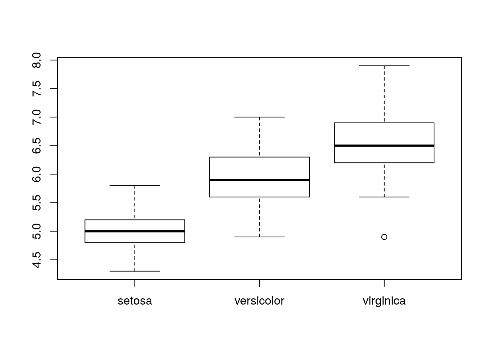

R/RStudio入門
注意: こちらはまだ暫定版です。当日(2018/03/21)までに変更の可能性があります。ご了承ください。
RとRStudioに触れてみよう
R(RStudio)の起動と画面
RStudioを早速起動させましょう。RStudioは主に4つの部分(pane)に分かれています:

左下: Console

Rを対話的に操作するところです。コマンドを記述して実行します。Rに対して「これをやれ」と指示を出し、その結果もまたここに出てきます。
左上: Source Editor

Rのスクリプトやファイルなどを編集する場所です。ここで各種ファイルを開き、コードを編集して保存したり、そのコードを実行します。ここでコードを実行すると、その内容がConsoleへ順次送られて実行されます。
通常、ここでRスクリプトファイル(*.R)を作成して、それを実行して作業をしていきます。よって、おそらくは多くの場合ここが一番利用するところとなるでしょう。
右下: File, Plots, Packages, Helpなど

File
ディレクトリ(フォルダ)にアクセスします。各ファイルをクリックするとその場で開くことができます。また名前の変更やディレクトリ作成などもできます。
Plots
グラフなどを出力すると、ここに表示されます。ある程度遡れますし、ここから画像などにエクスポートすることもできます。
Packages
Rの拡張パッケージを管理できます。Rはパッケージがポイントになるので、頻繁に利用します。「パッケージとは何か」については後述します。
Help
ヘルプウィンドウで、Rの関数などを検索したり、その組み込みのヘルプを閲覧することができます。ただあまりここから検索することは少なく、Consoleで ?help というようにしてヘルプを表示させるのがメインです
右上: Environment, Historyなど

Environment
Rの環境を表示します。とりあえずは「今Rで読み込んだり作ったりしてるデータや変数といったものが見れる」と考えておいてください。
History
Consoleで実行した内容の履歴です。ここから再度Consoleに送ったり、Scriptに送ったりすることもできます。
Rに触れてみよう
Hello, World
コンソールの使い方
以下が「コマンド?」状態:
>試しに以下のコードをコンソールに入力してEnter(Return)キーを押しましょう。
1+1ついでにこれもやってみましょう。
41^2*271^2関数を使おう
2の平方根を算出するにはどうすればよいでしょうか?
sqrt(2)## [1] 1.414214- 関数とは「inputに対して決まった命令を実行してoutput」
- 上の場合、
2という値を「その平方根を計算」して1.4142136を出します。- この2を引数(Arguments)といいます。
- そして出てきた結果が出力(Value)です。
- 関数は、関数名(引数, 引数, 引数, …)という感じで書きます。
オブジェクトを使おう
Rは数値や文字などをオブジェクトという単位で管理します。
# 今夜のbeerは500円です
beer <- 500
# beerの値段をRに聞いてみる
beer## [1] 500- この
beerがオブジェクトです。- 変数に感覚が近いです。
- いろんなものを入れて管理できます。
オブジェクトに文字列を
# 文字列を入れるときは""で挟む
drink <- "beer"
drink## [1] "beer"# c()関数でまとめて入れることも可能
drink <- c("beer", "sake", "shochu")
drink## [1] "beer" "sake" "shochu"オブジェクトに数値を
# 数値もまとめて可能
price <- c(500, 650, 450)
price## [1] 500 650 450# こんなこともできます
seki <- 1:10
seki## [1] 1 2 3 4 5 6 7 8 9 10オブジェクトを操作
# 2つ目の要素にアクセス
price[2]## [1] 650# 平均価格を算出しましょう
mean(price)## [1] 533.3333# 税込価格を計算しましょう
price * 1.08## [1] 540 702 486data.frameとは
簡単に言えばスプレットシートみたいな形のデータのことです。
head(iris, 4)## # A tibble: 4 x 5
## Sepal.Length Sepal.Width Petal.Length Petal.Width Species
## * <dbl> <dbl> <dbl> <dbl> <fct>
## 1 5.10 3.50 1.40 0.200 setosa
## 2 4.90 3.00 1.40 0.200 setosa
## 3 4.70 3.20 1.30 0.200 setosa
## 4 4.60 3.10 1.50 0.200 setosa- 列が変数、行が1サンプルです。
- 列の長さは全て同じ(矩形)です。
- 扱い方は別途説明します。
パッケージ
パッケージって何?
- すごくざっくり言うと関数とかデータセットとかをまとめたものです。
- ツールセットみたいなイメージを描いてください。
- Rでできることを広げてくれます！
- 現在CRANに登録されているパッケージ数はこれで調べられます:
nrow(available.packages())パッケージのインストール
例としてggplot2を使ってみましょう。
install.packages("ggplot2")- これでインストールできます。
- たまにエラーを返すことがあります。
- 多くはパッケージの依存関係が原因です。
- OSによって違ったり、そのマシンの環境によっても違ったり…
- 難しかったら身近な詳しい人や「Rなんでも相談室」で聞きましょう。
ファイルからデータの読み込み
Rにデータを読み込む方法を説明します。なおここでは手元にあるファイルから読み込む方法について触れます。リレーショナル・データベースを利用する方法やWebから取得する方法については割愛します。
csvファイルからの読み込み
一番基本的な方法となります。大きく2つの方法があります。
read.csv()関数を利用
例えば、現在の作業ディレクトリにiris-data.csvというファイルがあるとします。これを読み込む場合、以下のコマンドを実行します。
iris.data <- read.csv("iris-data.csv")これを実行すると、iris.dataというオブジェクトにcsvファイルの中身が読み込まれます。この場合、以下のような状態となります:
- 1行目が変数名として読み込まれます。
NAという文字を欠損値となります。- 空欄が欠損値となります。
- (欠損扱いではない)数値ではない値は文字列として認識されます。
- 文字列が含まれる列は(他に数値があっても)全て文字列と判定されます。
- デフォルトの設定では、Factor型として処理されます。
主なデフォルト設定も含めて丁寧に書くと以下のようになります:
iris.data <- read.csv(file = "iris-data.csv", header = TRUE, na.strings = "NA", stringsAsFactors = default.stringsAsFactors())主な引数を説明は以下の通りです:
- file: ファイル名(ファイルパス)。作業ディレクトリからの相対パスで指定します。
- header: 変数名を読み込むかどうか。
TRUEなら1行目を変数名として読み込みます。 - na.strings: 欠損値として処理したい値を指定します。
- たとえば欠損値として
999とか指定して入力していたならば、na.strings = "999"とします。 - 複数ある場合は、
na.strings = c("999", "-1")のように，c()で繋げて指定します。
- たとえば欠損値として
- stringAsFactors: 文字列の変数をFactor型にするかどうかの指定をします。
TRUEならば文字列を含む変数は全てFactor型として処理されます。FALSEならば文字列を含む変数は全てCharacter型として処理されます。- 標準でRで設定してあるのは
TRUEです。 - 個人的には
FALSEにしておいて、必要に応じてその変数をFactor型に切り替えています。
RStudioのimport Datasetを利用
RStudioを利用すれば、マウス操作でデータセットを読み込むことができます。
Environmentタブのところにあるimport Datasetをクリックし、From Local File…をクリックします
その後、以下のダイアログボックスで指定していきます:

ポイントになるところの説明です:
- Name: 読み込んだデータを格納するオブジェクト名です。
- Encoding: 文字コードを指定します。問題なければそのままで構いません。
- Heading: 1行目を変数名として読み込むかどうかを指定します。
- NA Strings: NAにする文字列。上述の通りです。
- Strings as Factors: 文字列をFactor型にするかどううかを指定します。上述の通りです。
つまり、コードでやるのをGUIでできる、というイメージです。慣れないうちはこちらのほうがスムーズかもしれません。慣れてきたらread.csv()などコードで読み込ませるのをおすすめします。
Excelファイルからの読み込み
Rは標準ではExcelファイルを直接読み込めませんが、{readxl}パッケージを利用すると直接読み込むことができるようになります:
# パッケージをインストールしてなければインストール
# install.packages(readr)
library(readxl)
xl_df_1 <- read_excel("xl_data.xlsx", sheet = "df_1")第一引数が読み込むファイル名、第二引数が読み込むシートです。日本語のデータも対応しているので、特に問題は生じないでしょう。.xlsと.xlsxの両方共に対応し、マシンにExcelがなくても読み込めます。
SPSSファイル(.sav)からの読み込み
Rは標準ではSPSSのファイルを直接読み込めませんが、{haven}パッケージを利用すると直接読み込むことができるようになります:
# パッケージをインストールしてなければインストール
# install.packages(haven)
library(haven)
sav_df <- read_sav("hoge.sav")引数には.savファイルを指定してください。なおSPSSにはラベル機能がありますが、この情報は削除されて読み込まれます(たぶん)。
その他
大量のデータを読み込む場合、read.csv()などでは処理に時間がかかることがあります。高速にデータを読み込むために{readr}などが開発されています。気になる方は調べてみてください。
また、RStudioではImport Datasetボタンからcsv, Excel, SPSS, SAS, Stataなどのファイルも読み込めるようになっています。これらは上記で紹介したパッケージを組み込んだ機能で、GUIの操作でデータを読み込めるようになります。
このようにRStudioを利用すれば簡単にデータを読みこませることができますが、極力スクリプトにコードを記述して、データを読みこませるようにしてください。この方が「どのデータを読み込んだのか」といったことが明確になり、ファイルを取り違えるといった分析者のミスが減少するからです。
Rで(軽く)分析をしてみよう
まず、Rを使うとどんな感じになるのか、試しに触ってみましょう。
データ構造を確認
Environmentのところにあるiris.dataをクリックすると、そのデータセットを見ることができます。

また、Consoleで以下のコードを入力して実行しましょう:
str(iris.data)## 'data.frame': 150 obs. of 5 variables:
## $ Sepal.Length: num 5.1 4.9 4.7 4.6 5 5.4 4.6 5 4.4 4.9 ...
## $ Sepal.Width : num 3.5 3 3.2 3.1 3.6 3.9 3.4 3.4 2.9 3.1 ...
## $ Petal.Length: num 1.4 1.4 1.3 1.5 1.4 1.7 1.4 1.5 1.4 1.5 ...
## $ Petal.Width : num 0.2 0.2 0.2 0.2 0.2 0.4 0.3 0.2 0.2 0.1 ...
## $ Species : Factor w/ 3 levels "setosa","versicolor",..: 1 1 1 1 1 1 1 1 1 1 ...iris.dataとして読み込んだデータの内容が表示されます。細かいところは省略しますが、大体はつかめるかと思います。
集計
それでは、現在Rにあるiris.dataというデータセットについて、平均や中央値、最大最小など集計してみましょう。Consoleで以下のコードを入力して実行してください:
summary(iris.data)## Sepal.Length Sepal.Width Petal.Length Petal.Width
## Min. :4.300 Min. :2.000 Min. :1.000 Min. :0.100
## 1st Qu.:5.100 1st Qu.:2.800 1st Qu.:1.600 1st Qu.:0.300
## Median :5.800 Median :3.000 Median :4.350 Median :1.300
## Mean :5.843 Mean :3.057 Mean :3.758 Mean :1.199
## 3rd Qu.:6.400 3rd Qu.:3.300 3rd Qu.:5.100 3rd Qu.:1.800
## Max. :7.900 Max. :4.400 Max. :6.900 Max. :2.500
## Species
## setosa :50
## versicolor:50
## virginica :50
##
##
## 各変数の基礎統計が算出され、表示されたかと思います。
分析
それでは、Speciesを独立変数、Sepal.Lengthを従属変数とする1要因3水準の分散分析を実施してみます:
result <- aov(Sepal.Length ~ Species, data = iris.data)これで分散分析の結果がresultに入ってます。ではこの結果の分散分析表を確認します:
summary(result)## Df Sum Sq Mean Sq F value Pr(>F)
## Species 2 63.21 31.606 119.3 <2e-16 ***
## Residuals 147 38.96 0.265
## ---
## Signif. codes: 0 '***' 0.001 '**' 0.01 '*' 0.05 '.' 0.1 ' ' 1それではこれを多重比較してみます。まずはholmで:
pairwise.t.test(iris.data$Sepal.Length, iris.data$Species)##
## Pairwise comparisons using t tests with pooled SD
##
## data: iris.data$Sepal.Length and iris.data$Species
##
## setosa versicolor
## versicolor 1.8e-15 -
## virginica < 2e-16 2.8e-09
##
## P value adjustment method: holm次にTukeyのHSDで:
TukeyHSD(result)## Tukey multiple comparisons of means
## 95% family-wise confidence level
##
## Fit: aov(formula = Sepal.Length ~ Species, data = iris.data)
##
## $Species
## diff lwr upr p adj
## versicolor-setosa 0.930 0.6862273 1.1737727 0
## virginica-setosa 1.582 1.3382273 1.8257727 0
## virginica-versicolor 0.652 0.4082273 0.8957727 0図示
これらの結果を図示します。まずは各水準ごとで要約統計量算出:
by(iris.data$Sepal.Length, iris.data$Species, summary)## iris.data$Species: setosa
## Min. 1st Qu. Median Mean 3rd Qu. Max.
## 4.300 4.800 5.000 5.006 5.200 5.800
## --------------------------------------------------------
## iris.data$Species: versicolor
## Min. 1st Qu. Median Mean 3rd Qu. Max.
## 4.900 5.600 5.900 5.936 6.300 7.000
## --------------------------------------------------------
## iris.data$Species: virginica
## Min. 1st Qu. Median Mean 3rd Qu. Max.
## 4.900 6.225 6.500 6.588 6.900 7.900これを箱ひげ図でプロット:
plot(iris.data$Species, iris.data$Sepal.Length)
まとめと参考文献
参考文献
- 村井 潤一郎(著) はじめてのR: ごく初歩の操作から統計解析の導入まで 北大路書房
- 山田剛史・杉澤 武俊・村井 潤一郎 (著) Rによるやさしい統計学 オーム社
- 奥村 晴彦(著) Rで楽しむ統計 (Wonderful R 1) 共立出版
session info
このページを実行した環境は以下のとおりです:
session-info:
sessionInfo()## R version 3.4.3 (2017-11-30)
## Platform: x86_64-pc-linux-gnu (64-bit)
## Running under: Ubuntu 16.04.4 LTS
##
## Matrix products: default
## BLAS: /usr/lib/libblas/libblas.so.3.6.0
## LAPACK: /usr/lib/lapack/liblapack.so.3.6.0
##
## locale:
## [1] LC_CTYPE=ja_JP.UTF-8 LC_NUMERIC=C
## [3] LC_TIME=ja_JP.UTF-8 LC_COLLATE=ja_JP.UTF-8
## [5] LC_MONETARY=ja_JP.UTF-8 LC_MESSAGES=ja_JP.UTF-8
## [7] LC_PAPER=ja_JP.UTF-8 LC_NAME=C
## [9] LC_ADDRESS=C LC_TELEPHONE=C
## [11] LC_MEASUREMENT=ja_JP.UTF-8 LC_IDENTIFICATION=C
##
## attached base packages:
## [1] stats graphics grDevices utils datasets methods base
##
## other attached packages:
## [1] tidyr_0.8.0 stringr_1.3.0 bindrcpp_0.2 dplyr_0.7.4
##
## loaded via a namespace (and not attached):
## [1] Rcpp_0.12.15 knitr_1.19 bindr_0.1 magrittr_1.5
## [5] tidyselect_0.2.3 R6_2.2.2 rlang_0.1.6 tools_3.4.3
## [9] utf8_1.1.3 cli_1.0.0 htmltools_0.3.6 yaml_2.1.16
## [13] rprojroot_1.3-2 digest_0.6.15 assertthat_0.2.0 tibble_1.4.2
## [17] crayon_1.3.4 purrr_0.2.4 glue_1.2.0 evaluate_0.10.1
## [21] rmarkdown_1.8 stringi_1.1.6 compiler_3.4.3 pillar_1.1.0
## [25] backports_1.1.2 pkgconfig_2.0.1